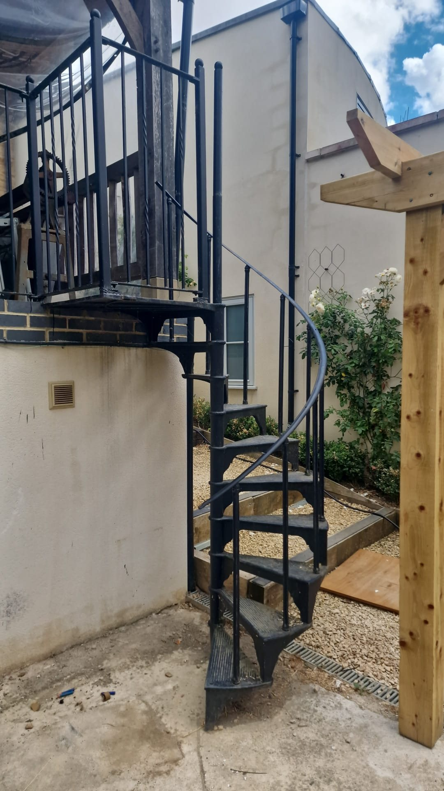
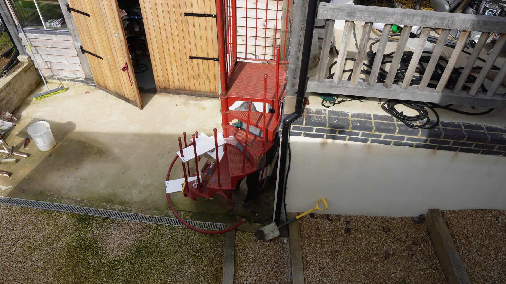
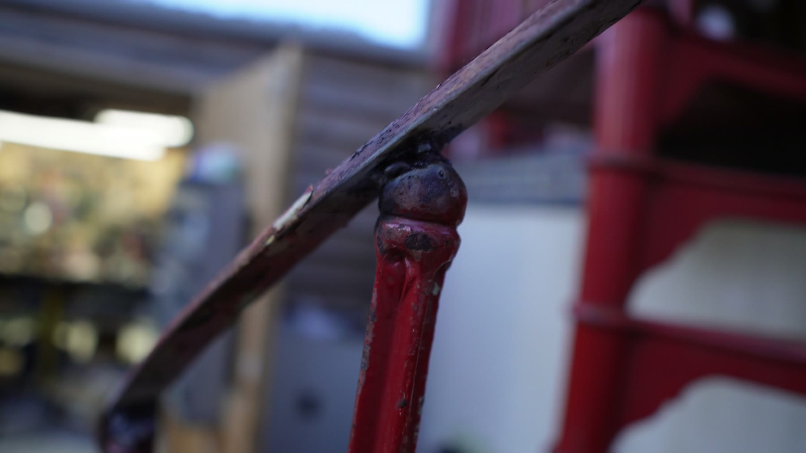
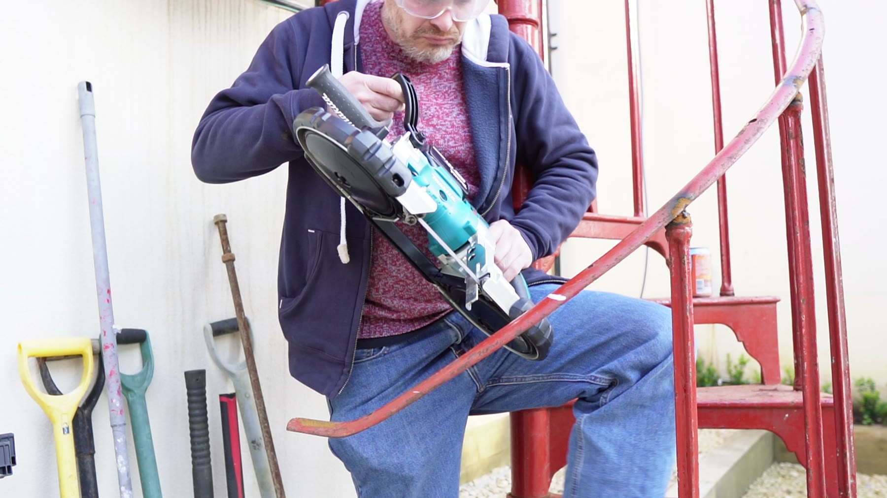

Handrail work
Architecture / fabrication / awkward geometry
Spiral Staircase
A spiral staircase and courtyard access project: steel, curves, handrail work, fitting around walls and pergola posts, and the kind of geometry that quietly punishes optimism.
The finished stair looks calm, which is usually a sign that the difficult bits have been hidden properly. Getting there meant measuring, cutting, grinding, test-fitting and making old-house constraints behave like they were part of the plan.

Before state
The red staircase era.
The build footage starts with the previous red steel staircase in the courtyard. It is a useful reminder that the job was not happening on a blank sheet of paper; it had to fit a real building, real levels, real walls, and all the slightly inconvenient truth that comes with them.
Curved steel
Cutting the line you actually need.
The constraint
Curves are unforgiving.
Spiral staircases are compact and beautiful, but they do not leave much room for fuzzy thinking. The handrail, treads, clearances and surrounding structure all have to agree, especially when the staircase is being made to live in an existing courtyard.
The work
Measure, cut, offer up, repeat.
The useful work is often not a single heroic operation. It is the steady loop of marking, cutting, grinding, checking the fit, changing your mind slightly, then doing the next piece better because the last one taught you something.
The payoff
It should look inevitable.
The best version of this sort of project is when the finished object stops looking like a problem that was solved and starts looking like a detail that always belonged to the house.
House-build logic
Nothing is ever just one object.
The staircase sits beside timber, masonry, glazing, railings and garden access. That is the fun part: the engineering has to work, but the object also has to make visual sense in the larger mess of a real place.


